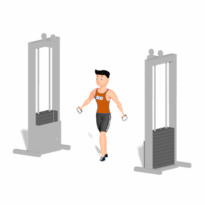

Cross Over Polia Baixa

Exercício para fortalecimento e hipertrofia dos músculos peitorais, com enfoque ao músculo peitoral maior.
Ficha Técnica
Tipo: Musculação
Grupo Muscular: Peito
Aparelho: Nenhum
Músculos: Nenhum
Como realizar
- Pegue em duas pegas de polia baixa. Coloque-se em pé e ao meio das duas polias;
- Afaste as pegas para os lados, mantendo os cotovelos sempre fixos;
- Baixe as polias para os lados até que os músculos do peito fiquem esticados, mantendo sempre os cotovelos fixos;
- Vá aproximando as pegas à medida que as for empurrando para a frente até que fiquem quase juntas;
- Retorne a posição inicial e repita a quantidade de vezes que o professor indicou.
 RC STORE
RC STORE